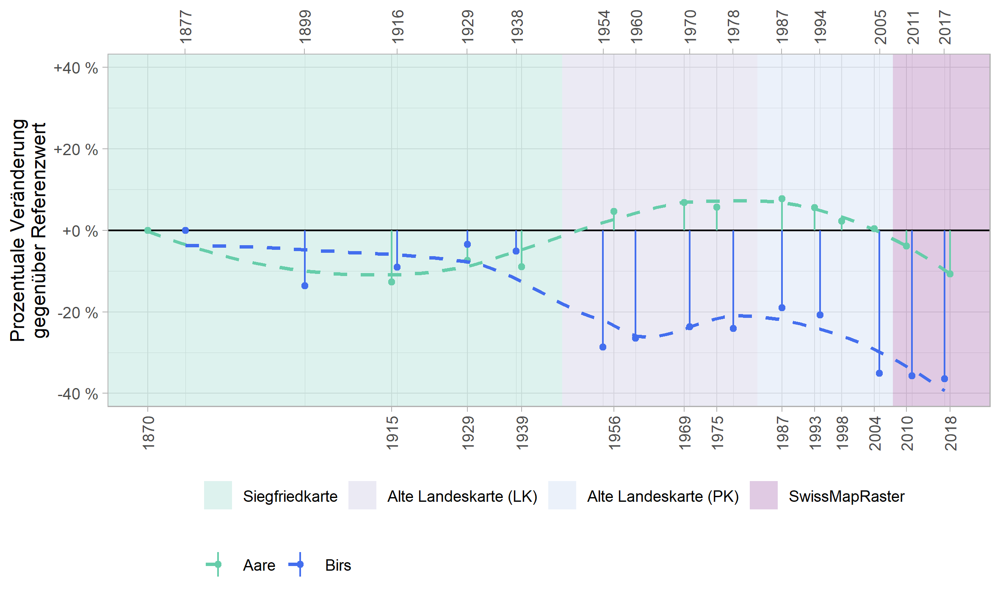
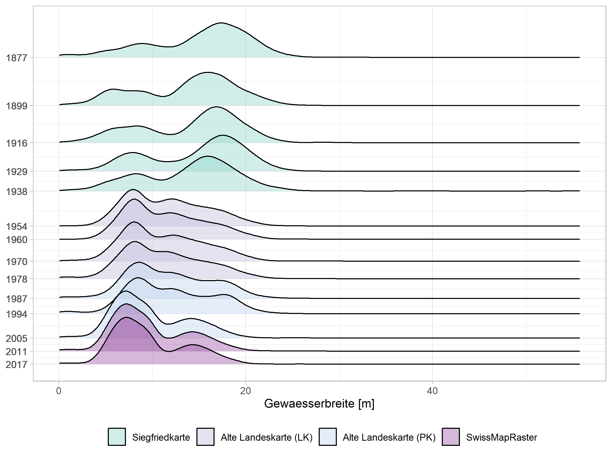

Surface area
River width variability (Birs)
Datasets
sigfried mapsTools
- python (arcpy) (for feature extraction)
sf(for vector data manipulation)ggplot2, ggridges(for visualisation)
Datasets
Tools
sf(for vector data)terra(for raster data)tmap(for visualisation)
Datasets
Tools
terra(for raster data)rayshader(for visualisation)
Code
NA :-( sorry!

Datasets
Tools
swissgeodata4rold abandoned package, initiated by me